the solar system
The motions of bodies in the solar system are, for the most part, regular and understandable. From Earth, the Sun rises in the eastern sky in the morning and sets in the western sky in the evening. If the Moon is full on Day 1, it will be full again on Day 28, and new on Day 14.
 
